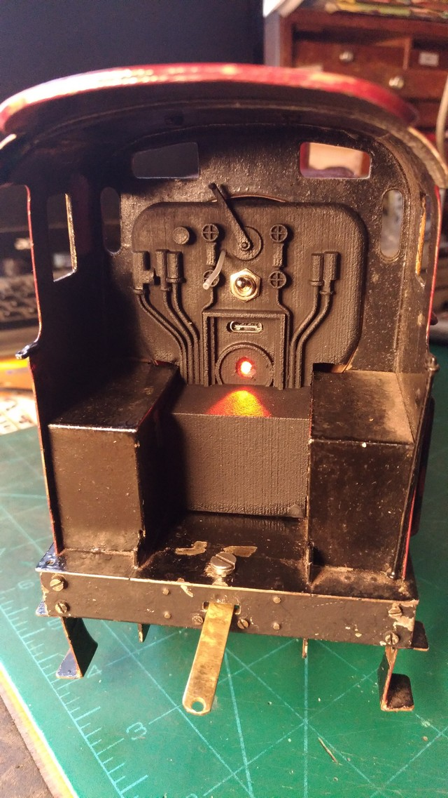

Bill Franklin's Midland 4-4-0
This beautiful Midland 4-4-0 is more complete than the 4F,
although never actually motorised. The engine had been cleaned of
rust and painted by the second Bill, who had lettered 'LMS' on the
tender, although I wonder if the model predates this.
The 8mm dia driving axles run in sprung axleboxes identical to those in the 4F. The choice of a metric size is interesting - the axles in Bing's 'Saint George' and '460' are this size too. Neither Bill had secured the boiler to the frames and so the first step was to make a 3D printed nylon saddle for the smokebox and secure it as inconspicuously as possible to the frames.
There was just enough space between the frame plates to fit my
standard sintered nylon crownwheel gearbox. This box accepts
either '385' or '540' size motors and provides a low gear ratio
(9:1) to accompany low voltage motors running on an 8.4v LiPo
pack, in this case two '26650' cels giving a genuine (a lot are
not!) 5Ah. The result is a very smooth running locomotive with a
healthy but not dangerous top speed and plenty of power.

In this picture you can see the motor nestling between the frames,
while the speed controller (nearest camera) and radio
receiver slide into brackets formed into the 3D printed nylon
backhead. Here's the view inside the cab showing the 3D printed
backhead detail and the power switch mounted centrally. Also note
the USB 'C' charging connector just above the firedoor, which is
illuminated by an orange flickering LED, providing warning that
the model has been left on!

Note that no modifications had to be made to tje original model to
achieve this result. Bill Franklin was clearly a Midland man and
In the box with the models were a number of glass negatives,
including this one:

Not quite the same locomotive as the model, this magnificent image
captures the spirit and grandeur of the old Midland. Bill's
model is not quite to scale in length, as was so common with Gauge
2 locomotives, except that this one is an inch or so too long.
In an age before photocopiers, it was common for model makers to
make a few measurements on the real engine from the station
platform and build the model from these and memory. That might be
what happened here, but that does nothing to diminish the
magnificence of Bill's model.
So does it run? And how!